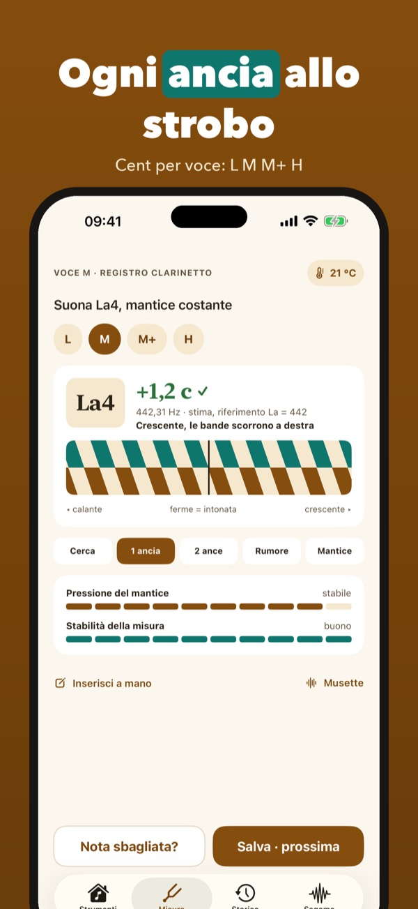
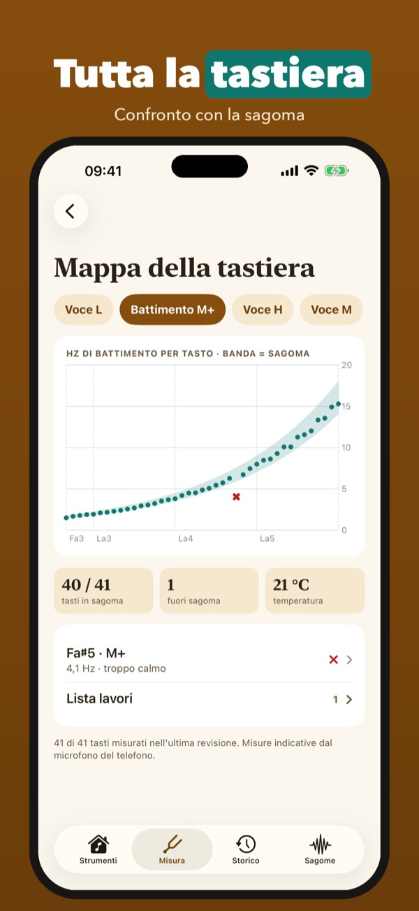
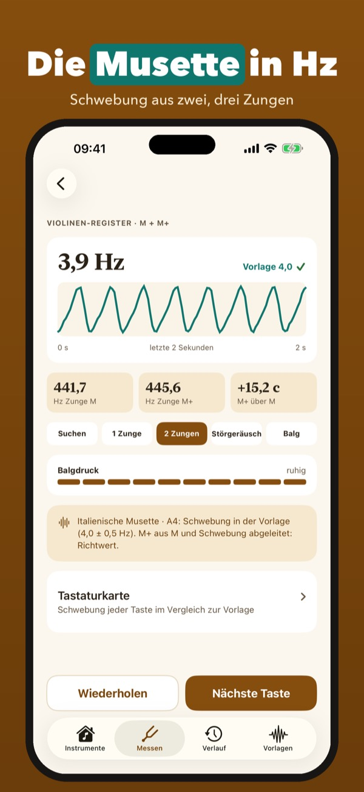
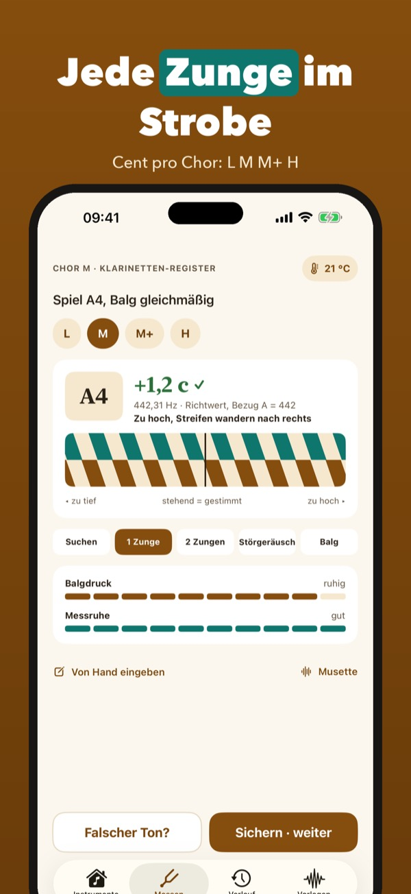
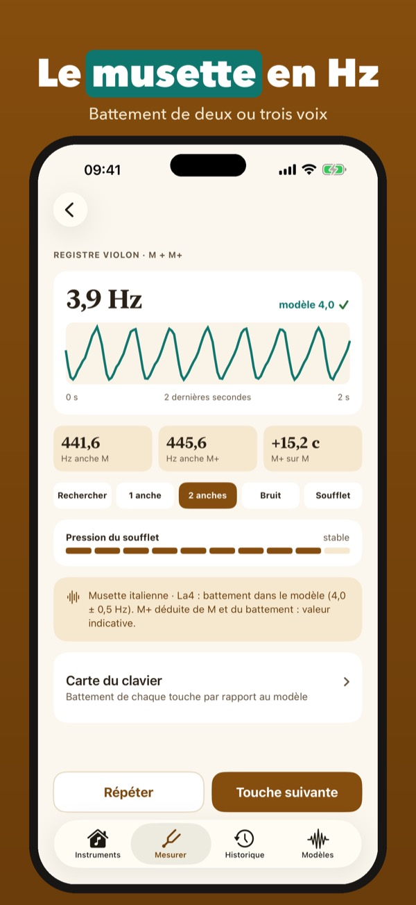
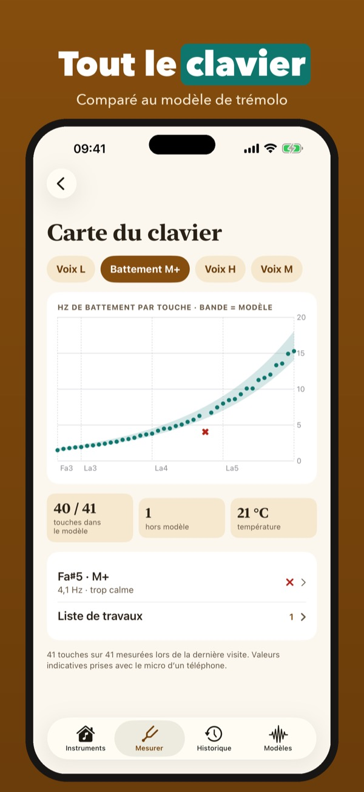
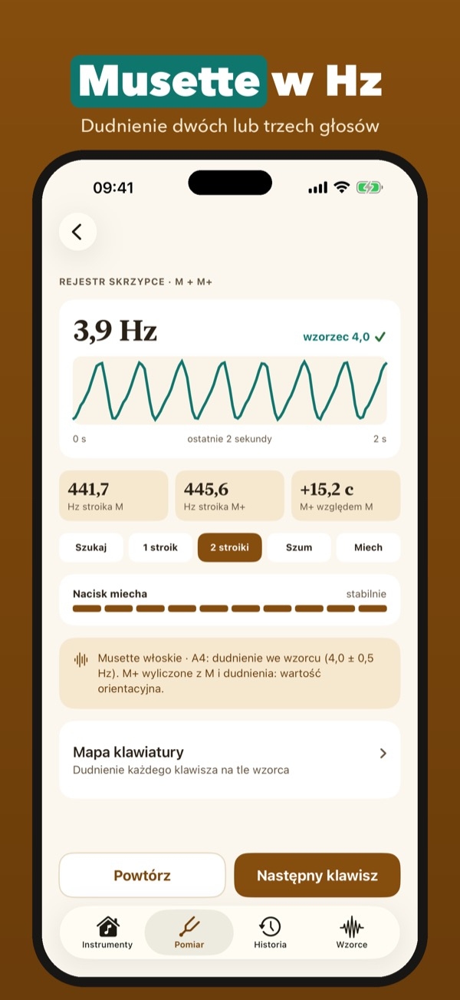
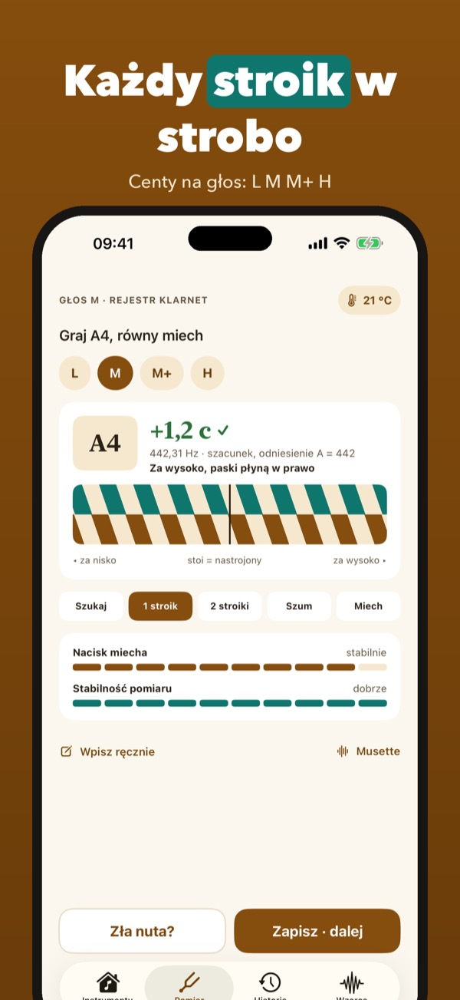
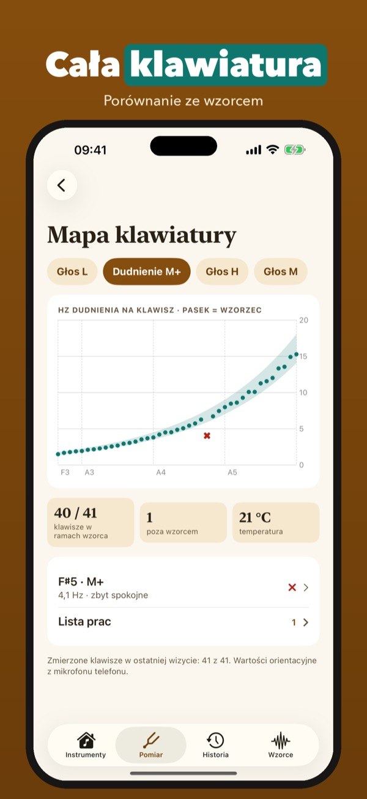
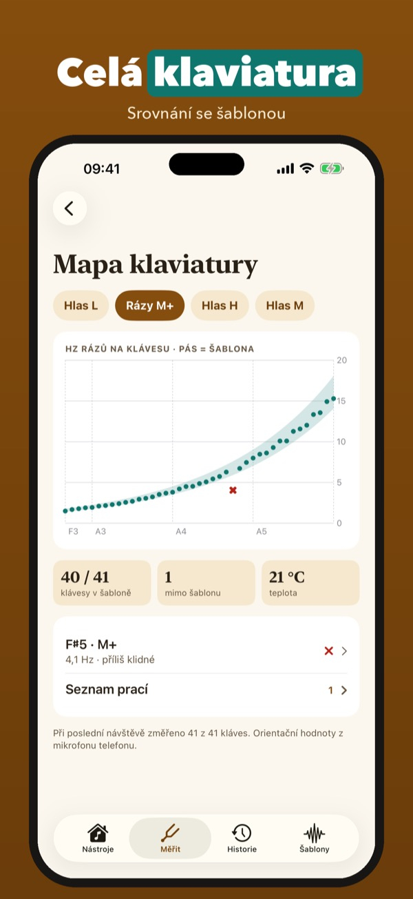

Ogni voce, ogni battimento
Misura ogni ancia con lo strobo e il battimento del musette in Hz. Confronto con la sagoma, storico delle revisioni e report PDF.


Ancia aiuta fisarmonicisti e accordatori a misurare lo strumento voce per voce. Crea il profilo con le voci (L, M, M+, H) e il diapason, premi un tasto e guarda lo strobo: cent e Hz di ogni ancia. Con due o tre voci insieme Ancia misura il battimento del tremolo e lo confronta con la sagoma scelta, su tutta la tastiera.
La misura cromatica di una voce alla volta, con strobo e cent, funziona senza acquisto. Ancia Plus è un acquisto unico: battimento musette, sagome, mappa della tastiera, strumenti illimitati, storico e report PDF. Niente abbonamento, niente pubblicità.
Ancia ascolta solo mentre misuri e analizza il suono sul telefono; non registra nulla. I valori sono misure indicative e possono differire da quelle di un accordatore da banco. Il lavoro sulle ance resta a te o al tuo laboratorio.
Terms of Use (EULA): https://www.apple.com/legal/internet-services/itunes/dev/stdeula/
Privacy: https://baytechbv.github.io/privacy/ancia-eu/
Stimmzungen und Musette messen
Jede Stimmzunge mit Strobe messen und die Musette-Schwebung in Hz sehen. Vergleich mit der Vorlage, Serviceverlauf und PDF-Bericht.


Ancia hilft Akkordeonspielern und Stimmern, ihr Instrument Stimme für Stimme zu messen. Lege ein Profil mit den Chören (L, M, M+, H) und dem Kammerton an, drück eine Taste und sieh den Strobe: Cent und Hz jeder Zunge. Klingen zwei oder drei Stimmen zusammen, misst Ancia die Tremolo-Schwebung und vergleicht sie mit der gewählten Vorlage, über die ganze Tastatur.
Die chromatische Messung einer Stimme nach der anderen, mit Strobe und Cent, funktioniert ohne Kauf. Ancia Plus ist ein Einmalkauf: Musette-Schwebung, Vorlagen, Tastaturkarte, beliebig viele Instrumente, Verlauf und PDF-Bericht. Kein Abo, keine Werbung.
Ancia hört nur beim Messen zu und analysiert den Klang auf dem Handy; nichts wird aufgenommen. Die Werte sind Richtwerte und können von einem Werkstatt-Stimmgerät abweichen. Über die Arbeit an den Stimmzungen entscheidest du oder deine Werkstatt.
Terms of Use (EULA): https://www.apple.com/legal/internet-services/itunes/dev/stdeula/
Privacy: https://baytechbv.github.io/privacy/ancia-eu/
Chaque anche, chaque musette
Mesurez chaque anche au stroboscope et le battement du musette en Hz. Comparaison avec le modèle, historique des révisions et rapport PDF.


Ancia aide accordéonistes et accordeurs à mesurer l’instrument voix par voix. Créez le profil avec les voix (L, M, M+, H) et le diapason, appuyez sur une touche et regardez le strobe : cents et Hz de chaque anche. Avec deux ou trois voix ensemble, Ancia mesure le battement du trémolo et le compare au modèle choisi, sur tout le clavier.
La mesure chromatique d’une voix à la fois, avec strobe et cents, fonctionne sans achat. Ancia Plus est un achat unique : battement musette, modèles, carte du clavier, instruments illimités, historique et rapport PDF. Sans abonnement, sans pub.
Ancia n’écoute que pendant la mesure et analyse le son sur le téléphone ; rien n’est enregistré. Les valeurs sont indicatives et peuvent différer d’un accordeur d’atelier. Le travail sur les anches reste votre choix ou celui de votre atelier.
Terms of Use (EULA): https://www.apple.com/legal/internet-services/itunes/dev/stdeula/
Privacy: https://baytechbv.github.io/privacy/ancia-eu/
Każdy stroik i tremolo musette
Zmierz każdy stroik stroboskopem i dudnienie musette w Hz. Porównanie ze wzorcem, historia przeglądów i raport PDF.



Ancia pomaga akordeonistom i stroicielom mierzyć instrument głos po głosie. Utwórz profil z głosami (L, M, M+, H) i kamertonem, naciśnij klawisz i patrz na strobo: centy i Hz każdego stroika. Gdy brzmią razem dwa lub trzy głosy, Ancia mierzy dudnienie tremolo i porównuje je z wybranym wzorcem, na całej klawiaturze.
Pomiar chromatyczny jednego głosu naraz, ze strobo i centami, działa bez zakupu. Ancia Plus to jednorazowy zakup: dudnienie musette, wzorce, mapa klawiatury, dowolna liczba instrumentów, historia i raport PDF. Bez subskrypcji, bez reklam.
Ancia słucha tylko podczas pomiaru i analizuje dźwięk w telefonie; nic nie jest nagrywane. Wartości są orientacyjne i mogą różnić się od tunera warsztatowego. O pracy przy stroikach decydujesz ty lub twój warsztat.
Terms of Use (EULA): https://www.apple.com/legal/internet-services/itunes/dev/stdeula/
Privacy: https://baytechbv.github.io/privacy/ancia-eu/
Jazýček po jazýčku, i musette
Změř každý jazýček stroboskopem a rázy musette v Hz. Srovnání se šablonou, historie servisu a PDF zpráva.

Ancia pomáhá akordeonistům a ladičům měřit nástroj hlas po hlasu. Vytvoř profil s hlasy (L, M, M+, H) a ladicím tónem, stiskni klávesu a sleduj strobo: centy a Hz každého jazýčku. Když znějí dva nebo tři hlasy spolu, Ancia změří rázy tremola a porovná je se zvolenou šablonou, po celé klaviatuře.
Chromatické měření jednoho hlasu po druhém, se strobem a centy, funguje bez nákupu. Ancia Plus je jednorázový nákup: rázy musette, šablony, mapa klaviatury, neomezeně nástrojů, historie a PDF zpráva. Bez předplatného, bez reklam.
Ancia poslouchá jen při měření a zvuk analyzuje v telefonu; nic se nenahrává. Hodnoty jsou orientační a mohou se lišit od dílenské ladičky. O práci na jazýčcích rozhoduješ ty nebo tvoje dílna.
Terms of Use (EULA): https://www.apple.com/legal/internet-services/itunes/dev/stdeula/
Privacy: https://baytechbv.github.io/privacy/ancia-eu/